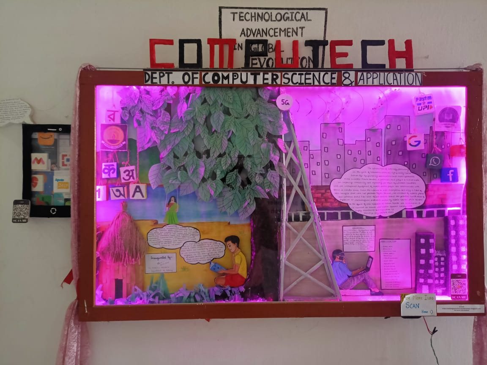
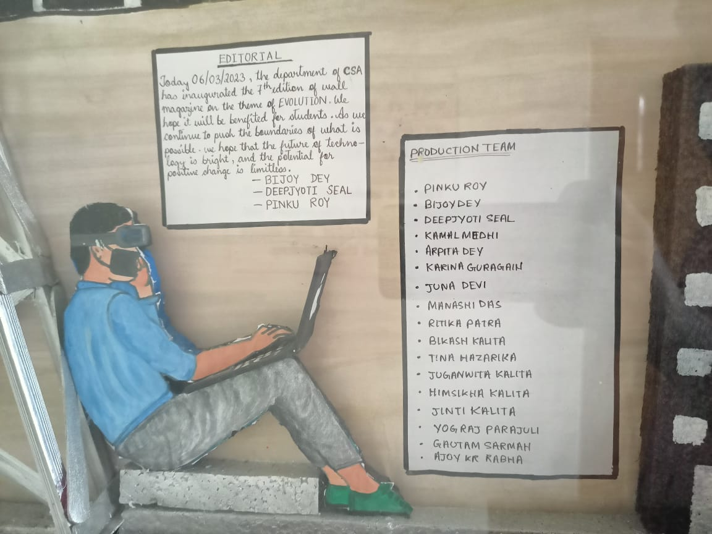

Wall Magazinem of Bachelor of Computer Science & Application
For session 2023-24
COMPUTECH

TECHNOLOGICAL ADVANCEMENT IN GLOBAL EVOLUTION
There is no doubt that technology has improved our lives in many ways. From making communication easier, to improving medical care, to enabling us to work more efficiently, technology has transformed our world. However, it is also true that technology has some
negative effects on the environment and our health. In this article, we will discuss both sides of the coin.
Firstly, let's talk about the positive impacts of technology. The advancements in technology have allowed us to automate many tasks, making our lives easier and more convenient. For example, we can order food, clothes, or even groceries online without ever leaving our homes. Additionally, technology has enabled us to
communicate more easily and frequently with friends and family who live far away. Additionally, technology has enabled us to communicate more easily and frequently with friends and family who live far away. It has also opened up new avenues for education, with online courses and e-learning platforms.
Another positive impact of technology is in the medical field. Advances in medical technology have led to better diagnosis and treatment of diseases, resulting in improved health outcomes. For instance, the use of 3D printing in creating prosthetic limbs has significantly improved the lives of amputees. Furthermore, telemedicine has made healthcare more accessible to those living in remote areas, where medical facilities may be scarce.
However, it is important to note that technology has also had some negative impacts on the environment and our health. The production and disposal of electronic devices and other technological equipment create a significant amount of electronic waste (e-waste).

This has harmful effects on the environment as e-waste contains hazardous chemicals such as lead, mercury, and cadmium, which can pollute soil and water sources. Moreover, electronic waste generates greenhouse gases, which contribute to climate change.
Another negative impact of technology is the decrease in physical activity due to sedentary lifestyles. People are spending more time sitting in front of screens, leading to a rise in obesity, diabetes, and other health problems.
Furthermore, excessive use of technology can lead to addiction and mental health issues, including anxiety and depression.
In conclusion, technology has brought about many positive changes in our lives, but it also has its negative impacts on the environment and our health. It is important for us to be mindful of these negative effects and take steps to minimize them. We can start by recycling our electronic waste, reducing our screen time, and being more physically active. We can also advocate for more
responsible use of technology, such as sustainable production and disposal of electronic devices, and the development of safer and healthier technological products. Ultimately, we should strive to find a balance between using technology to improve our lives and protecting the environment and our health.